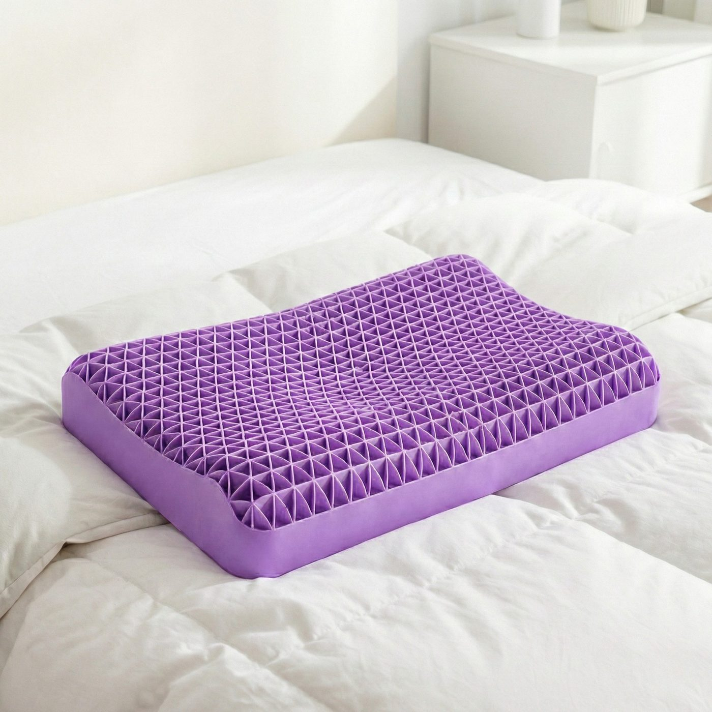
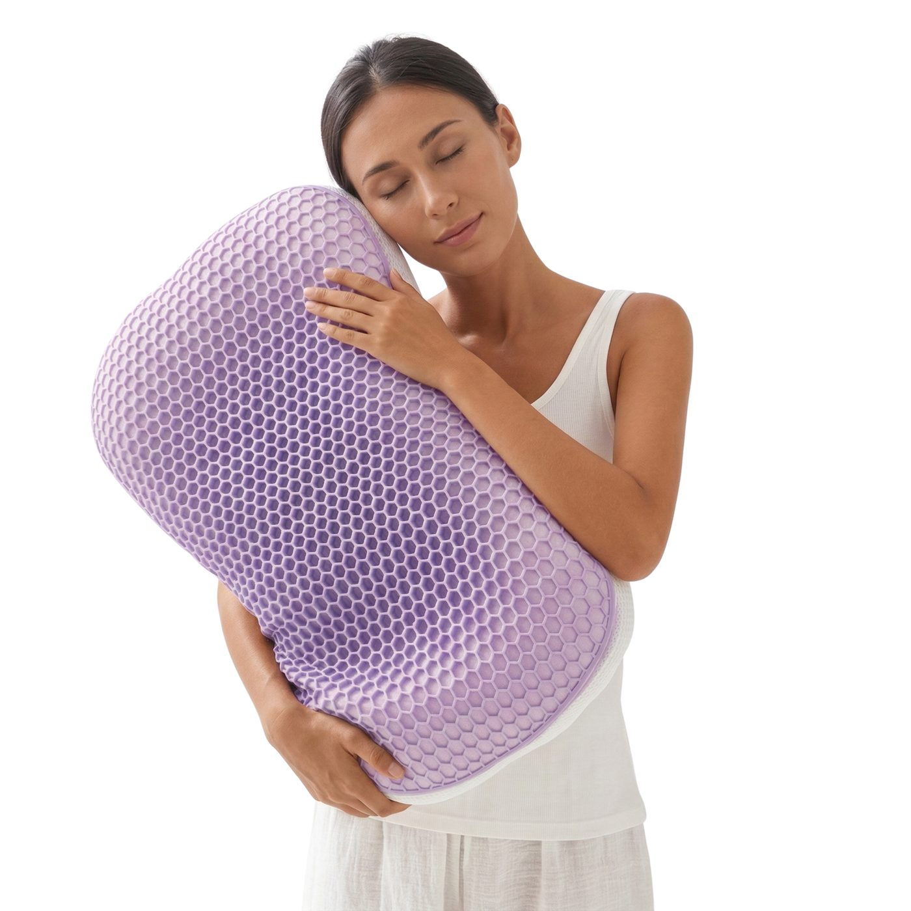
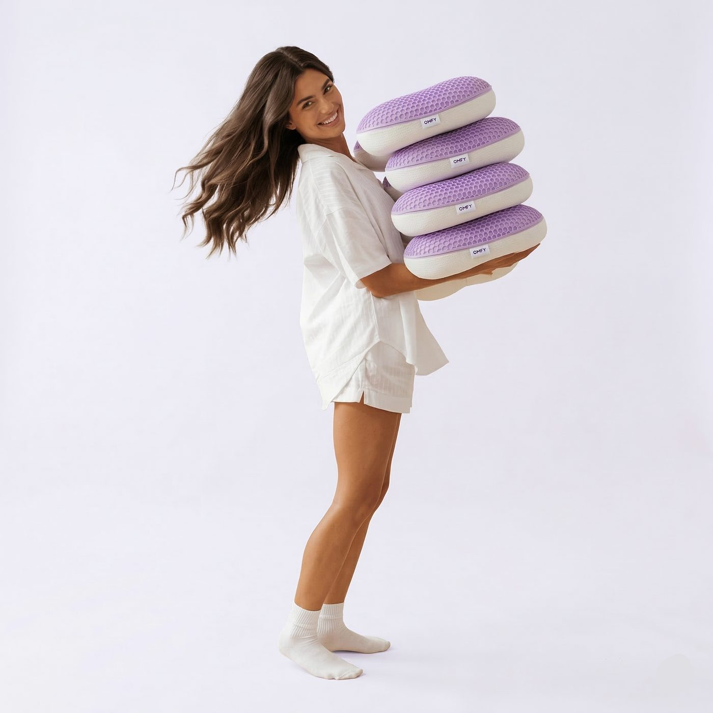

« Mes cervicales revivent »
Après des années à me réveiller avec le cou bloqué, j'étais sceptique. Dès la deuxième semaine, plus aucune raideur le matin. Mon kiné m'a demandé ce que j'avais changé !
Sophie L. — Bordeaux
Achat vérifié
Nouveau — Oreiller ergonomique rafraîchissant
La structure alvéolaire en TPE de l'oreiller Dozia laisse l'air circuler en continu, épouse votre nuque avec précision et ne s'affaisse jamais. La différence se sent dès la première nuit.

Circulation d'air continue
Alignement cervical parfait
Ils parlent de nous
Vous vous reconnaissez ?
Si vous vivez l'une de ces situations chaque nuit, le problème ne vient pas de vous.
Vous retournez votre oreiller plusieurs fois par nuit pour chercher le côté frais.
Raideurs, tensions, maux de tête : votre nuque n'est pas soutenue correctement.
Il a perdu sa forme en quelques mois et ne ressemble plus à rien.
Réveils fréquents, sommeil léger : vos nuits ne vous reposent plus.
Nous avons conçu Dozia pour mettre fin à tout cela. Définitivement.

100 nuits
d'essai sans risque
Notre solution
Là où un oreiller classique se contente d'amortir, Dozia travaille toute la nuit : sa structure alvéolaire en TPE évacue la chaleur, répartit les pressions et maintient votre nuque dans son axe naturel.
La technologie
Inspirée du nid d'abeille, l'une des structures les plus intelligentes de la nature : légère, respirante et incroyablement résistante.

TPE
polymère nouvelle génération
Le matériau
La mousse à mémoire de forme emmagasine votre chaleur et se tasse avec le temps. Le TPE (élastomère thermoplastique) fait exactement l'inverse : il reste frais, reprend instantanément sa forme et conserve son soutien année après année.

< 1 s
pour reprendre sa forme
Le fonctionnement
Chaque alvéole agit comme un mini-ressort indépendant. Les cellules cèdent uniquement là où votre tête appuie, pendant que les autres continuent de soutenir votre nuque. Résultat : un alignement parfait, quelle que soit votre position.
Des centaines d'alvéoles ouvertes laissent l'air traverser l'oreiller en continu et évacuent la chaleur accumulée.
La conception ergonomique à double hauteur maintient la courbe naturelle de vos cervicales, sur le dos comme sur le côté.
Moins de micro-réveils, plus de sommeil profond : vous vous réveillez reposé·e, sans raideurs ni sueurs nocturnes.
Les bénéfices
Fini le côté chaud de l'oreiller. La surface reste fraîche du soir au matin, même en été.
Vous vous levez sans raideur, sans tension et sans ce mal de tête du matin.
Un sommeil profond et continu, c'est plus d'énergie, de concentration et de bonne humeur.
Là où un oreiller classique se remplace chaque année, Dozia garde sa forme pendant des années.
Cœur lavable à l'eau et housse en maille 3D lavable en machine : propreté totale.
Aucun montage, aucun temps de gonflage : sortez-le du carton et dormez mieux ce soir.
La transformation
Le comparatif
Comparez point par point. Le verdict est sans appel.
| Critère | Oreiller Dozia | Mousse à mémoire | Oreiller classique |
|---|---|---|---|
| Fraîcheur | Fraîcheur active toute la nuit | Emmagasine la chaleur | Chauffe rapidement |
| Maintien cervical | Adaptatif et précis | Correct, mais se dégrade | Quasi inexistant |
| Durabilité | Plusieurs années sans affaissement | Se tasse en 1 à 2 ans | S'aplatit en quelques mois |
| Respirabilité | Structure 100 % ouverte | Mousse dense et fermée | Variable selon le garnissage |
| Hygiène | Cœur lavable à l'eau | Non lavable | Lavage difficile, sèche mal |
| Adaptation aux positions | Instantanée, toutes positions | Lente (mémoire de forme) | Aucune |
Toutes les positions
Les alvéoles se compriment indépendamment les unes des autres : l'oreiller épouse automatiquement chaque position de sommeil.
La courbe haute (10 cm) comble l'espace entre l'épaule et la tête.
La nuque repose dans le creux ergonomique, la colonne reste dans son axe.
La courbe basse (8 cm) évite l'hyperextension de la nuque.
Adaptation instantanée à chaque mouvement, sans vous réveiller.

Spécial été
Quand le thermomètre ne descend plus, votre oreiller devient votre meilleur allié. La structure ouverte de Dozia évacue la chaleur en continu — là où la mousse la retient contre votre visage.
94 %
dorment plus frais dès la 1re nuit*
87 %
ne retournent plus leur oreiller*
*Enquête menée auprès de 1 208 clients Dozia, juin 2026.
Avis vérifiés
4,8/5
Basé sur 2 314 avis vérifiés
Après des années à me réveiller avec le cou bloqué, j'étais sceptique. Dès la deuxième semaine, plus aucune raideur le matin. Mon kiné m'a demandé ce que j'avais changé !
Sophie L. — Bordeaux
Achat vérifié
Je dormais mal dès qu'il faisait plus de 22 degrés. Cet été, canicule ou pas, l'oreiller est resté frais toute la nuit. C'est bluffant, on sent vraiment l'air passer.
Marc T. — Lyon
Achat vérifié
C'est mon deuxième été avec Dozia. Zéro affaissement, il a exactement la même forme qu'au premier jour. Vu le nombre d'oreillers que je changeais avant, il est déjà rentabilisé.
Claire D. — Nantes
Achat vérifié
92 %
se rendorment plus facilement
89 %
ont moins de douleurs cervicales
96 %
le recommandent à un proche
12 437
clients depuis le lancement

Notre histoire
Dozia est née à Lyon, d'une frustration partagée par des milliers de Français : des nuits trop chaudes, des réveils douloureux et des oreillers à remplacer chaque année. Nous avons passé 18 mois et 14 prototypes à concevoir l'oreiller que nous cherchions sans jamais le trouver.
Nous ne voulions pas vendre un oreiller de plus. Nous voulions que des milliers de personnes arrêtent de subir leurs nuits.
Antoine Mercier
Fondateur de Dozia
Offre de lancement
Livraison offerte et essai 100 nuits sur tous les packs. Housse en maille 3D incluse avec chaque oreiller.
1 oreiller Dozia
Le plus choisi
2 oreillers Dozia — idéal en couple
Soit 69,50 € par oreiller
3 oreillers Dozia — toute la maison
Soit 63 € par oreiller

Idée cadeau
Anniversaire, fête des mères, Noël, pendaison de crémaillère : offrir un meilleur sommeil, c'est le cadeau le plus utile qui soit. Chaque oreiller est livré dans un coffret soigné, prêt à offrir.
Zéro risque
Testez-le chez vous. Pas convaincu·e ? Remboursement intégral, sans justification.
Expédition sous 24 h depuis notre entrepôt européen, suivi en temps réel.
Étiquette de retour prépayée et remboursement sous 7 jours après réception.
Transactions chiffrées SSL. Visa, Mastercard, Amex, PayPal et Apple Pay.
Une vraie équipe à Lyon, qui répond sous 24 h ouvrées, avec le sourire.
Garantie légale de conformité, conforme au droit français de la consommation.
Vos questions
Oui. Contrairement à la mousse à mémoire de forme qui emmagasine la chaleur, la structure alvéolaire ouverte du TPE laisse l'air circuler en continu à travers des centaines de cellules. La chaleur est évacuée à chaque mouvement : la surface reste fraîche, sans avoir à retourner l'oreiller.
L'oreiller Dozia a été conçu pour maintenir l'alignement naturel de la nuque et de la colonne. Sa structure cède uniquement là où votre tête appuie et soutient fermement la courbe cervicale. La plupart de nos clients constatent une nette réduction des raideurs matinales dès les premières semaines.
En cas de pathologie cervicale diagnostiquée, demandez conseil à votre médecin ou kinésithérapeute.
Oui, soyons transparents : la sensation du TPE alvéolaire est différente d'un oreiller classique. Comptez 3 à 7 nuits pour que votre corps s'y habitue pleinement. C'est précisément pour cela que nous offrons 100 nuits d'essai — largement de quoi vous faire un avis en toute sérénité.
Vous dormez sur votre oreiller Dozia pendant 100 nuits. S'il ne vous convient pas, contactez notre service client : nous vous envoyons une étiquette de retour prépayée et vous remboursons intégralement, sans justification à fournir.
La housse en maille 3D se lave en machine à 30 °C. Le cœur en TPE se rince simplement à l'eau tiède savonneuse et sèche à l'air libre en quelques minutes. Une hygiène impossible à obtenir avec un oreiller en mousse.
Votre commande est expédiée sous 24 h ouvrées depuis notre entrepôt européen et livrée en 3 à 5 jours ouvrés en France métropolitaine, avec un numéro de suivi. La livraison est offerte, sans minimum d'achat.
Essayez Dozia chez vous, sans risque. Si vous ne dormez pas mieux, nous vous remboursons intégralement.
Commander mon oreiller — 79 €